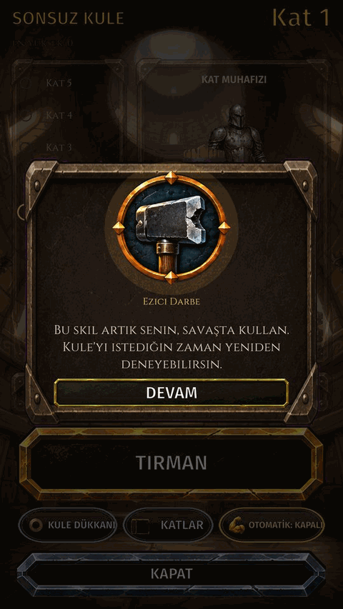
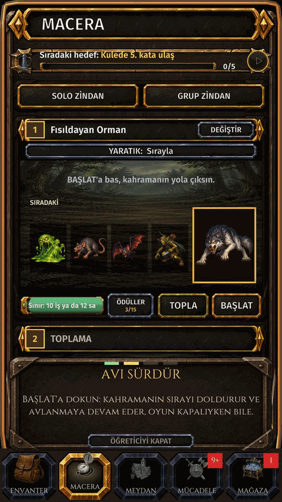
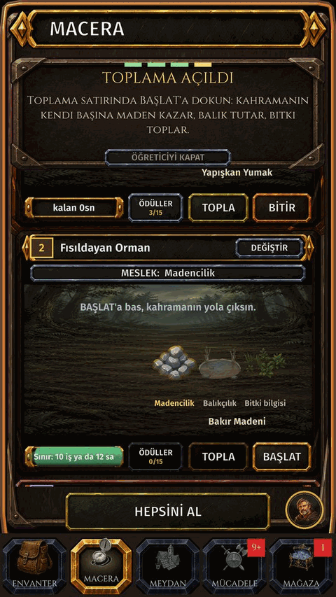
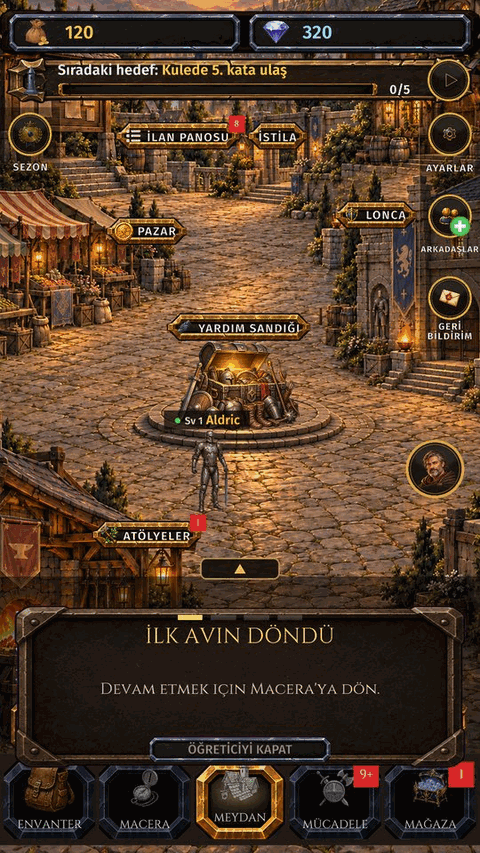
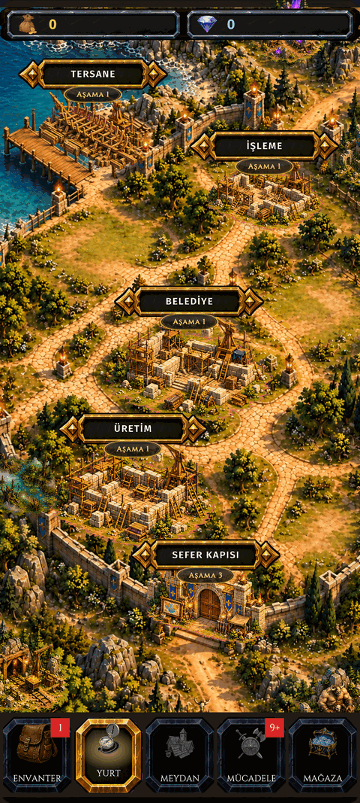

Nasıl gelişilir
Forgekin'de yeni misin? İlk dövüşünden ilk Efsanevi eşyana kadar bu adımları izle.
1. Kahramanını oluştur (seviye 1)
- Oklarla sınıfını seç: Savaşçı, Okçu, Büyücü ya da Rahip. Bir isim yaz ve OLUŞTUR'a dokun.
- İlk dövüşün kendiliğinden, Sonsuz Kule'nin ilk katında başlar. Kazan, ilk yeteneğin senin olsun.
- Sınıfından memnun değil misin? Sonra ayarlardan değiştirebilirsin (SINIF DEĞİŞTİR).
Nereye gidilir: KARAKTER OLUŞTUR ekranı, sonra Kule.

Ayrıntı: Bir dövüş nasıl görünür · Sonsuz Kule
2. Macera'da avlan
- Macera'yı aç. Yaratıkları seç (Sırayla ya da birine dokun) ve BAŞLAT'a dokun: kahramanın kuyruğu doldurur ve OYUN KAPALIYKEN DE avlanmaya devam eder.
- Dövüşler bitince TOPLA'ya dokun. Alttaki HEPSİNİ AL bütün pencereleri birden toplar. Ganimet çantana, EXP seviyene gider.
- Ödül havuzu dolunca yeni dövüş kuyruğa alınamaz: önce topla.
- Macera'nın üstündeki hedef şeridi her zaman sıradaki hedefini gösterir.
- Oyunu kapatmadan önce kuyruğu doldur: sen yokken kahramanın çalışır.
Nereye gidilir: Alt çubuk, ikinci sekme: MACERA. Yurt'un açılınca sekmenin adı YURT olur: SEFER KAPISI'na dokun.

Ayrıntı: Macera · Ödülleri toplamak · Bölgeler ve haritalar
3. Seviye 2'den itibaren topla
- Seviye 2'de Macera'da TOPLAMA penceresi açılır. Madencilik, Balıkçılık ya da Bitki bilgisini seç ve BAŞLAT'a dokun: kahramanın kendi başına maden kazar, balık tutar, ot toplar.
- Toplama o mesleğin seviyesini yükseltir, karakter seviyeni değil.
- Bir toplama aleti (kazma, olta ya da orak) işi hızlandırır. Aletler yaratıklardan düşer.
Nereye gidilir: Macera: TOPLAMA penceresi.

4. Daha iyi teçhizat giy
- Teçhizat yaratıklardan düşer. ENVANTER'de EN İYİYİ GİY en güçlü parçalarını tek dokunuşla giydirir.
- Ne olduğunu görmek için herhangi bir ikona dokun. Eşyanın ••• menüsünde yükseltme, satış ve kırdırma vardır.
- Giyilen teçhizat üretilmez: yaratıklardan ve zindanlardan düşer ya da pazardan alınır.
- Meydan'daki YARDIM SANDIĞI yeni oyunculara bedava teçhizat verir.
Nereye gidilir: Alt çubuk: ENVANTER (en solda).

Ayrıntı: Envanter ve karakter · Eşya bilgisi · Nadirlik · Yardım Sandığı
5. Günlük görevler ve Meydan
- Oyun MEYDAN'da açılır. Tabelaları İlan Panosu'na, Pazar'a, Lonca'ya, Yardım Sandığı'na ve Atölyeler'e götürür.
- İLAN PANOSU, GÜNLÜK GÖREVLER: görevler oynadıkça ilerler. GİT doğru ekrana götürür, TOPLA ödülü alır. HAFTALIK sekmesi de var.
- GİRİŞ TAKVİMİ oynadığın her gün bir ödül verir.
- Kayboldun mu? Ayarlardaki NASIL OYNANIR öğreticiyi yeniden başlatır; çoğu ekranda kendini anlatan bir (?) vardır.
Nereye gidilir: Alt çubuk: MEYDAN (ortada).

Ayrıntı: Meydan · Günlük görevler · Giriş takvimi · Öğretici ve nasıl oynanır
6. Yetenek puanlarını harca
- Seviye atladıkça yetenek puanı kazanırsın. YETENEKLER üzerindeki rozet harcanacak puanın olduğunu gösterir.
- Her sınıfın kendi ağacı vardır. Satırlar seviye atladıkça açılır; puanlar içindeki yetenekleri açar ve kademesini yükseltir. Sonuna kadar yükselen aktif yetenek evrimleşebilir.
- Her şeyi açamazsın, bir kurulum seç. YETENEKLERİ SIFIRLA puanlarını geri verir.
Nereye gidilir: ENVANTER, sonra YETENEKLER (karakterinin sol üstü).
Ayrıntı: Yetenek ağacı
7. Meslekler: topla, işle, üret
- Her meslek başka bir mesleğin malzemesini üretir. Toplayıcılar (Madencilik, Balıkçılık, Bitki bilgisi) ham madde getirir, işleyiciler (Dökümcülük, Simya, Aşçılık) onu işler, üreticiler (Demircilik, Zırhçılık, Kuyumculuk, Silahçılık) bitirir.
- ATÖLYELER'i aç, MESLEK SEÇ, bir tarif seç ve YAP'a dokun. Kuyruk oyun kapalıyken de çalışır; ürünleri sonra TOPLA.
- Malzeme mi eksik? Ona dokun ve TARİFİ GÖSTER'i kullan. ELİNDEKİLERLE ÜRET şu an yapabileceklerini listeler.
- Meslekler zindan anahtarı, yükseltme taşı, tamir kâğıdı ve teçhizatının nadirliğini yükselten malzemeleri üretir.
Nereye gidilir: Alt çubuk: MEYDAN, sonra ATÖLYELER tabelası.


Ayrıntı: Atölye · Elindekilerle üret · Aletler
8. Seviye 5'ten itibaren: zindan, pazar, arena
- Zindanlar takı, Nadir teçhizat ve zindan çekirdeği düşürür. Her zindan kendi kademesinin anahtarını ister.
- Anahtarları Demircilik bir külçe, bir yumuşatıcı ve bir usta yemeğinden yapar; pazardan da alınır.
- Macera'dan gir: üstteki SOLO ZİNDAN. Başkalarıyla GRUP ZİNDAN'da oyna.
- PAZAR açılır: işine yaramayanı sat, eksiğini al.
- MÜCADELE'de ARENA açılır: arena jetonu için başka oyuncuların kahramanlarıyla dövüş.
Nereye gidilir: Macera: SOLO ZİNDAN. Meydan: PAZAR. Alt çubuk: MÜCADELE.


Ayrıntı: Solo zindan · Grup zindanı · Pazar · Arena
9. Teçhizatını güçlendir
- '+' yükseltme: yükseltme taşları '+' seviyesini artırır. Yüksek seviyelerde başarısızlık eşyayı kırabilir: koruma taşı kullan.
- Kaliteyi Yükselt: nadirliği adım adım yükselt, Normal'den Nadir'e, Epik'e, Efsanevi'ye.
- Zar ve rün: yeni ek statlar at ya da istediğin statı bas.
- İşine yaramayan teçhizatı kırdır: yukarıdakilerin hepsi için yükseltme taşı ve öz verir.
- Kademe aktarımı: güçlü bir Efsanevi eşyayı emeğini kaybetmeden bir üst kademeye taşı.
- Teçhizat dövüşte yıpranır. Kırık eşya hiç stat vermez: tamir kâğıdıyla onar.
Nereye gidilir: ENVANTER: eşyaya dokun, sonra YÜKSELTME ya da ••• menüsü.

Ayrıntı: Yükseltme (+) · Kalite yükseltme · Zar ve rün · Kırdırma · Öz · Kademe aktarımı · Dayanıklılık ve tamir
10. Mücadele modları
- MÜCADELE sekmesi her mod için bir tabelası olan bir kamptır: Sonsuz Kule, Arena, Günün Bossu, Sıralama, Keşif ve Hayatta Kalma. Kilitli tabela açılacağı seviyeyi gösterir.
- Kule ve Arena jeton verir; jetonları MAĞAZA'daki kendi dükkânlarında harca.
- Keşif ve Hayatta Kalma bossları atölye aleti düşürebilir.
Nereye gidilir: Alt çubuk: MÜCADELE (dördüncü sekme).

Ayrıntı: Mücadele ekranı · Sonsuz Kule · Arena · Günün Bossu · Keşifler · Hayatta Kalma
11. Seviye 10'dan itibaren: loncaya katıl
- Bir loncaya katıl ya da kendi loncanı kur. Seviye atlatmak için bağış yap, lonca bossuyla birlikte savaş ve lonca dükkânından alışveriş yap.
- Sezon boyunca krallıklar krallık savaşı yapar.
Nereye gidilir: Alt çubuk: MEYDAN, sonra LONCA tabelası.


Ayrıntı: Lonca · Lonca bossu · Krallıklar
12. Yurt, gemi ve petler
- YURT'un: İŞLEME ve ÜRETİM binalarını altın ve malzemeyle geliştir.
- Seviye 20'den itibaren TERSANE açılır: bir gemi inşa et ve adalara yelken aç. Ada sandıklarında pet kutusu çıkar.
- Petler: bir peti açmak için parça topla. Eşlikçi pet kendi mesleğini hızlandırır; petler savaşmaz.
Nereye gidilir: Alt çubuk: YURT. Petler: ENVANTER, sonra PET.

Ayrıntı: Yurt · Tersane ve seferler · Petler
Ne zaman ne açılır
| Seviye | Açılan |
|---|---|
| Sv 1 | Sonsuz Kule |
| Sv 5 | Arena |
| Sv 5 | İlk zindan |
| Sv 5 | Pazar |
| Sv 8 | Günün Bossu |
| Sv 10 | Lonca kurmak |
| Sv 10 | Krallık |
| Sv 20 | Tersane |
İyi alışkanlıklar
- Oyunu kapatmadan önce Macera kuyruğunu ve atölye kuyruğunu dolu bırak.
- Ödülleri sık topla: dolu havuz yeni dövüşü durdurur.
- Yeni bir av bölgesine ancak teçhizatın izin verdiği hızda çık.
- Teçhizatın kırılmadan tamir et, çantanda bir tamir kâğıdı bulundur.
- Oyundaki her ikon bilgisini açar: bilmediğin her şeye dokun.
İlgili sayfalar
Başlarken · Sınıflar · Atölye ve meslekler · Teçhizatı güçlendirme · Savaş modları · Bölgeler